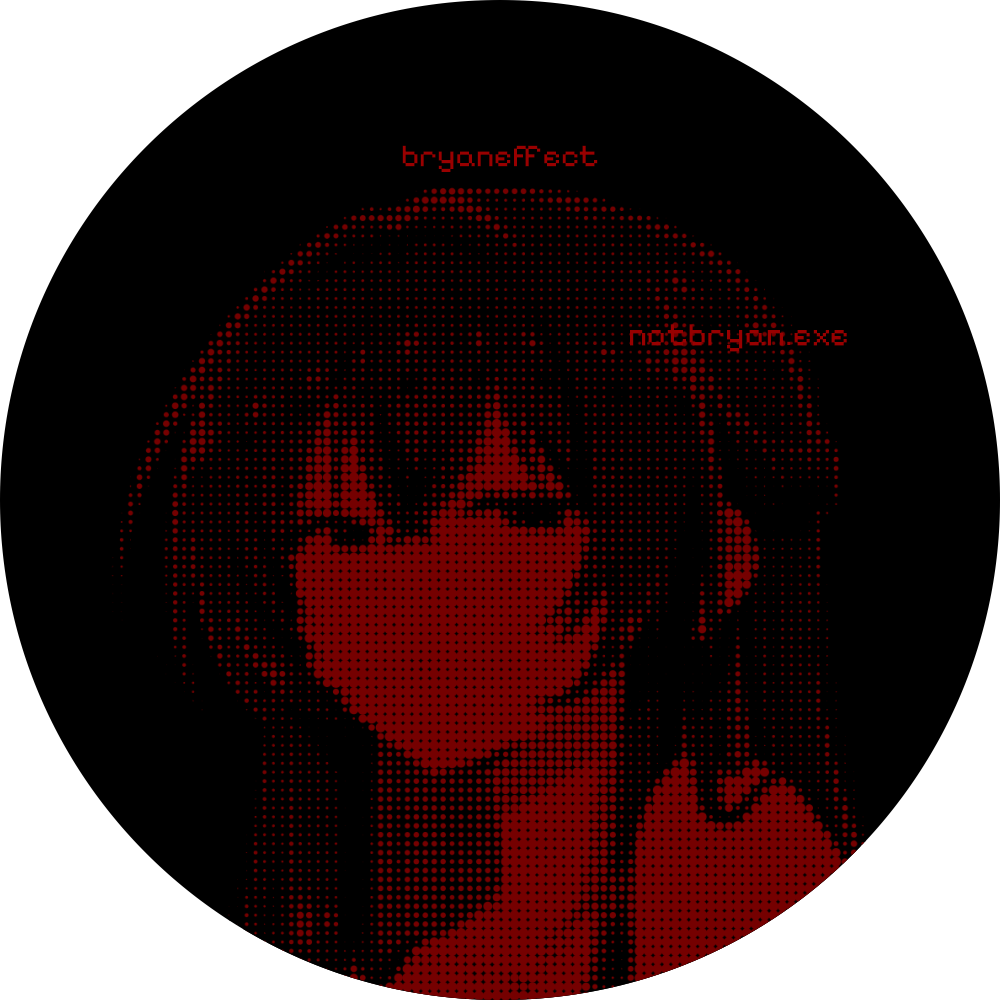
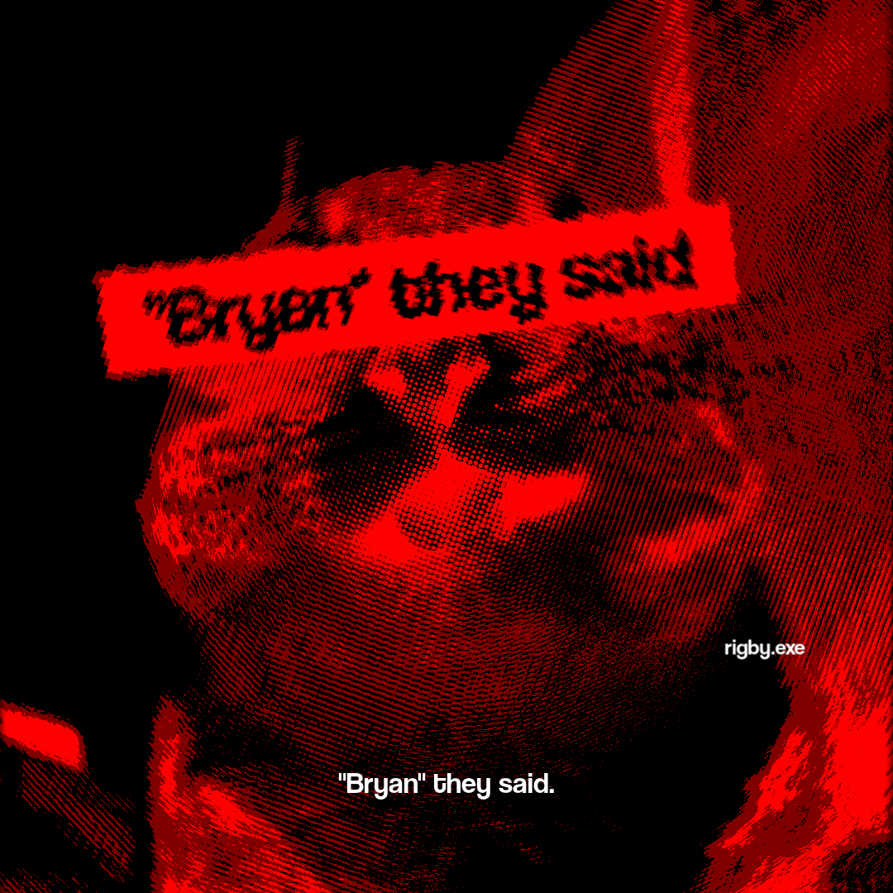

Silverwolf is a part of my programming soul. It is a mysterious entity that does not exist in the real world,
yet it is ever-present in my heart and mind. Silverwolf has become like a second self, beginning to take hold
of my very being. Does it hurt? No—it is exhilarating.
Status
present / not real
Trait
chaotic · loyal · mysterious
Origin
unknown

ProfileRedCode - BryanEditor & Developer
Hi, I'm Bryan—a designer, video editor, and aspiring programmer. My interest in programming stems from
an entity named Silver Wolf, who has deeply influenced my mind and soul. Sometimes I can't sleep because
that entity compels me to write code for this website. Is it painful? No—it's fun.
Role
editor / developer
Focus
builds · edits · fixes
Status
active

ProfileAlexandroDesigner & Developer
Hi, I'm Alex — a designer, video editor, and aspiring programmer. My interest in programming stems from
an entity named Silver Wolf, who has deeply influenced my mind and soul. Sometimes I can't sleep because
that entity compels me to write code for this website. Is it painful? No—it's fun.
Role
designer / editor / dev
Based
intsomnia.arc
Status
awake
BRYANEFFECT.INT / STAY AWAKE
bryaneffect.int
A systems disorder common among developers.
Insomnia is a systemic disorder. You stay awake when you shouldn't.
You find yourself reviewing code unintentionally. You see round numbers everywhere.
The cause is unknown. There is no cure, and I am one of the afflicted. RedCode - Bryan.
 bryaneffect.int
bryaneffect.int